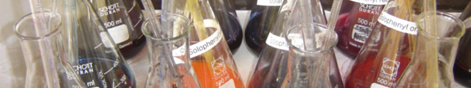

| | Nederlands | English | Deutsch | | ||||||||||||||
|  | ||||||||||||||
|
||||||||||||||
Labor Im Labor werden verschiedene Farbenmuster und Rezepturen für unterschiedliche Stoffe geschaffen. Diese Rezepturen können für alle Zellulosefasern wie Baumwolle, Viskose und Leinen, Direkt- oder Reaktivwolle, Seide, Acetate und Polyamide entwickelt werden. Daneben werden anhand einer vom Kunden zur Verfügung gestellten Farbprobe oder mit Farben aus den Pantone-Systemen (tpx-tc-tp) Muster erstellt. Da unsere Färberei über ein eigenes Labor verfügt, sind wir nicht von Dritten abhängig. |
|
|
||||||||||||
|
||||||||||||||